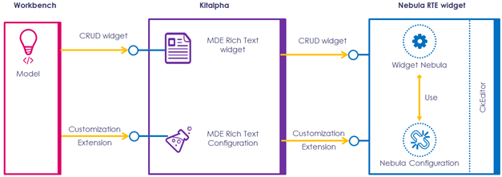

MDE Rich Text: big picture
This section detailled the interactions between the clients of the MDE Rich Text Widget in hand and in other hand the component on which the widget is based

The picture denote a workbench which uses the MDE Rich Text Widget on it's model. Kitalpha adapts Nebula Rich Text editor in context of Model Driven Engineering.
MDE Rich Text: Plugins
- org.polarsys.kitalpha.richtext.common: Contains services and abstract implementation that the widget must provide
- org.polarsys.kitalpha.richtext.nebula.widget: contains specific Nebula Widget adaptations. This component is responsible to instantiate the Nebula Rich Text Editor
- org.polarsys.kitalpha.richtext.widget: The implementation of widget and provides an Eclipse editor which embed the Widget, extension point to use a specifique property sheet page, a factory which provides a set of configurations of the the widget and install listeners to ''Open Link' menu and saving on focus lost event.
- org.polarsys.kitalpha.richtext.tools: Contains implementation of specific tools for the MDE. Mainly, Add Link and Add image tools. Also, it provides extension point which handle link types
- org.polarsys.kitalpha.richtext.widget.ext: Contains the contributions which allows management of links
- org.polarsys.kitalpha.richtext.widget.tools.strategies: Contains the contributions which allows the navigration from link to its target, mainly, to model element.